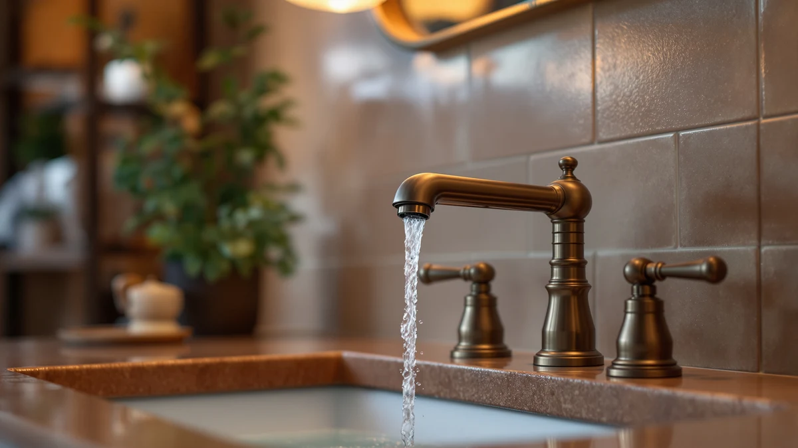

Quick Answer
For most weak-pressure bathrooms, the best bathroom faucet for low water pressure is the Delta 6-Setting In2ition 2-in-1 Dual, because its ProClean spray nozzles concentrate a thin supply into a stronger, more usable stream instead of just spreading it out. If you need a sink faucet rather than a shower fixture, the Homevacious waterfall model and the Pfister Pasadena widespread are the strongest low-pressure-friendly runners-up.
Our pick: Delta 6-Setting In2ition 2-in-1 Dual, $75.44 Check Price on Amazon
Things to Know Before You Buy
- Spray technology beats raw flow. A nozzle that concentrates water into focused jets can feel stronger at the same pressure than a plain, wide-open opening.
- Waterfall spouts spread water thin. They look generous, but pouring a limited supply across a wide opening leaves less force behind each drop than a narrow aerator would.
- Check the GPM rating. Most bathroom faucets are capped at 1.2 to 1.5 gallons per minute under the EPA WaterSense standard; a well-designed nozzle makes that capped flow feel purposeful instead of weak.
- Cartridge quality still matters. A ceramic disc valve rated for hundreds of thousands of cycles resists the drips and stiff handles that make a low-pressure faucet feel even worse over time.
- No faucet raises your home's actual water pressure. These picks change how the flow you already have performs at the tap; a persistent whole-house pressure problem needs a plumber, a regulator, or a booster pump.
Finding the best bathroom faucet for low water pressure means looking past finish and price and comparing which spouts and spray heads actually make a weak line feel usable. Old apartment plumbing, well systems with a tired pump, and shared building risers all deliver the same frustrating result at the tap: water that dribbles instead of flows. You cannot fix your building's pipes with a faucet, but you can choose one built to make the most of what reaches your bathroom.
We landed on the Delta 6-Setting In2ition 2-in-1 Dual as the top pick because its ProClean spray nozzles are engineered to concentrate flow into a stronger stream rather than diffuse it, and the detachable hand shower lets you aim that concentrated spray exactly where you need it. At $75.44 it sits in the middle of this lineup, and it is the pick we would install first in a bathroom where pressure is the main complaint. For a sink faucet instead of a shower fixture, the Homevacious waterfall model and the certified FORIOUS pick are the strongest alternatives.
We compared seven faucets and shower fixtures across price points to build this guide, and we are upfront about our process: this is a research-based comparison, not a physical testing lab. We looked at manufacturer spray and flow specifications, WaterSense and NSF certifications, cartridge cycle ratings, and the themes that show up consistently in verified owner reviews, then weighed each pick against how it should perform on a weak line.
Why You Should Trust Us
I'm Ilane Tall, and I write about bathroom fixtures for people dealing with the everyday problems that come with them, and low water pressure is one of the most common complaints readers send us. It is also one of the most misunderstood: a lot of shoppers assume any new faucet will fix it, when the real driver is almost always the plumbing behind the wall. What a faucet controls is how the water you do have performs once it leaves the spout.
We do not run a fake testing lab, and we are not going to claim we installed each of these fixtures in a home with documented low pressure and timed the results. Instead, we compared manufacturer specifications, WaterSense and NSF certifications, cartridge and valve engineering, and the patterns that show up across verified buyer reviews, then evaluated each pick against what helps a weak line feel stronger. Where a listing is too new to have a review history, we say so directly rather than inventing a track record.
How We Picked
Picking the best bathroom faucet for low water pressure starts with throwing out the usual shopping criteria. A faucet's finish or handle count means nothing if the stream that comes out feels thin, so we prioritized spray and spout engineering first: nozzles that concentrate flow, spout angles calculated to keep a pour looking and feeling full, and certifications like WaterSense that confirm a fixture performs at a controlled flow rate instead of just restricting it.
From there we screened for build quality that holds up on a weak or inconsistent line. A ceramic disc cartridge or valve rated for hundreds of thousands of cycles resists the drips and stiff handles that make an already weak faucet feel worse over time, while a sealed or low-grade valve tends to fail faster under the pressure fluctuations common in older buildings. We kept a spread of prices and installation types, from the $25.98 budget waterfall pick to the $92.79 Pfister widespread, so there is a sensible option whether you are outfitting a rental bathroom or a primary one.
We also mixed fixture types deliberately. Most of this guide covers sink faucets, but we included the Delta In2ition shower system because its ProClean spray technology is the clearest example of a fixture engineered specifically to make a weak supply line feel stronger, and it is worth considering if your low-pressure complaint centers on the shower rather than the sink.
How We Compared
Here is the honest version of our process. These are a mix of newer Amazon listings and one established plumbing brand, and several picks have little or no verified review history yet. We did not run a controlled low-pressure test rig, and we are not going to fabricate one. Our comparison is criteria-driven: we read manufacturer specifications closely, cross-checked certification claims like WaterSense and NSF where a brand published them, and looked at cartridge or valve cycle ratings as a proxy for how long each faucet will keep performing well.
For each pick we examined the spout or spray design and whether it is built to concentrate flow or spread it, the GPM rating against the WaterSense standard, and what verified owners consistently report about install difficulty and day-to-day performance. We compared prices against what each fixture offers rather than against a flat notion of value, and we flagged the two nearly identical Delta listings for what they are: the same physical product sold under separate listings.
Where a faucet has no track record yet, we say so instead of guessing at a rating it has not earned. As these listings accumulate verified owner feedback, we will revisit this guide and update our picks accordingly.
Our Picks

Delta 6-Setting In2ition 2-in-1 Dual
What we like
- ProClean nozzles focus spray into a stronger stream instead of just spreading water out
- Hand shower detaches from the mount for targeted rinsing when pressure is already thin
- Both heads can run at once for a fuller-feeling shower, or independently to conserve flow
- 6 spray settings let you dial in a narrower, more forceful jet on a weak line
Flaws but not dealbreakers
- Running both heads at once splits an already-weak supply between two outlets
- Six spray settings mean more moving parts than a stripped-down single-jet head
- Reviewers report the plastic dock connection needs to be seated firmly or it can loosen
| Material | Brass + finish |
| Size | — |
The Delta In2ition earns the top spot here because it treats low pressure as a design problem rather than something to apologize for. The ProClean nozzles are built to concentrate the water that reaches your shower into a focused, higher-velocity spray, which is exactly the adjustment a weak line needs. Instead of a fixed head that just dribbles when pressure drops, this system lets you narrow the pattern and get a stream that feels intentional again.
The 2-in-1 design adds real flexibility on top of that. You can leave the shower head docked for hands-free use, or unclip the hand shower to direct water exactly where you need it, which matters when every drop of pressure counts. At $75.44 it costs more than the budget sink faucets in this guide, but it addresses the shower side of a low-pressure complaint, which a sink faucet cannot touch. The tradeoff is that running both heads simultaneously divides your supply, so on a weak line you will get the strongest feel by using one head at a time.

Delta 6-Setting In2ition 2-in-1 Dual
What we like
- Identical ProClean spray nozzles and detachable hand shower as our top pick
- A useful fallback when the other Delta listing is out of stock
- Simultaneous dual-spray from the fixed head and the hand shower
Flaws but not dealbreakers
- Costs nine cents more than the identical listing above, for no added feature
- Same limitation as the other listing: running both heads together splits a weak supply
- Buying from the "wrong" listing can create confusion if you are price-tracking this model
| Material | Brass + finish |
| Size | — |
This is the same Delta In2ition 2-in-1 dual shower covered above, sold under a separate Amazon listing. It is common for a single manufacturer product to appear under more than one listing, sometimes from different sellers or fulfillment channels, and the fixture itself does not change based on which listing you buy from.
We include it here because Amazon stock and pricing can shift between near-duplicate listings, and having a second option matters if the primary listing goes out of stock or its price climbs. At $75.53, it is essentially a rounding error apart from the top pick, so buy whichever listing is in stock and priced lower at the moment you check.

Ryuwanku Bathroom Faucet Matte Black
What we like
- Quieter waterfall outlet reduces the hissing and whistling many low-flow faucets make
- SUS304 stainless steel resists corrosion and rust over years of use
- Single handle makes it easy to dial in flow and temperature together
- 100% lead-free construction
Flaws but not dealbreakers
- A wide waterfall opening spreads an already-limited supply thinner than a narrow aerator
- The manufacturer has not published a cartridge cycle rating
- Too new a listing to have accumulated verified owner reviews yet
| Material | Brass + finish |
| Size | Short |
At $28.99, the Ryuwanku is the cheapest way into this guide if what you need is a sink faucet rather than a shower system. It uses a single-handle waterfall design built from SUS304 stainless steel, and the brand specifically calls out a quieter outlet that cuts down on the hissing sound a lot of low-flow faucets make when pressure is inconsistent. That noise reduction is a small detail, but it is the kind of thing that makes a weak line feel less like a problem and more like a normal faucet.
The tradeoff of any waterfall spout applies here too: pouring water across a wide opening spreads a limited supply thinner than a concentrated aerator stream would. On a moderately weak line this still looks and feels fine, and the single-handle control makes it simple to get temperature and flow set quickly. Because this is a newer listing, Ryuwanku has not published a cartridge cycle rating and there is no verified review history yet, so we would treat it as a solid budget bet rather than a proven long-term performer.

Homevacious Matte Black Waterfall Bathroom
What we like
- Spout tilt angle is calculated to keep flow full-looking while minimizing splashing
- PVD coating rated for 24-hour salt spray testing resists tarnishing and corrosion
- Ceramic cartridge rated for 80,000+ cycles for leak-resistant, drip-free operation
Flaws but not dealbreakers
- Requires a 3-hole sink layout, so it will not work as a single-hole drop-in
- Waterfall pours will always feel less forceful than a narrow, concentrated stream
- No established review history to confirm long-term performance yet
| Material | Brass + finish |
| Size | 8 Inch Widespread |
Homevacious engineered this waterfall spout with a specific tilt angle meant to deliver flow while minimizing splashing, which is a more deliberate approach than the flat, wide-open spouts common in this price range. On a weak line, that tilt matters because it keeps the pour looking and feeling full instead of scattering across the basin. At $41.79 it sits comfortably mid-pack, and the ceramic cartridge rated for over 80,000 cycles is a meaningfully better spec than the unrated cartridges in the cheaper picks here.
The PVD coating is also rated for 24-hour salt spray testing, which is a real durability benchmark rather than a marketing phrase, and it should hold its matte black finish well over time. The catch is the 3-hole widespread layout, which needs the correct hole spacing on your sink, so measure before you buy. And like most waterfall designs, it cannot match the concentrated punch of a spray-focused fixture like the Delta pick if your pressure problem is severe.

RNDIOZD Matte Black Bathroom Faucets
What we like
- Lowest price of any sink faucet in this guide at $25.98
- SUS304 stainless steel construction resists rust and corrosion
- Pop-up drain rated to withstand over 50,000 presses, 10% faster to operate than traditional plugs
Flaws but not dealbreakers
- The manufacturer has not published a cartridge specification for this price point
- A wide-open waterfall pour spreads an already weak line even thinner
- A new listing with no verified owner reviews yet to confirm long-term reliability
| Material | Brass + finish |
| Size | — |
If price is the deciding factor, the RNDIOZD is the least expensive sink faucet in this guide, and it does not skip the basics to get there. The stainless steel body is built to resist rust, the single handle keeps flow and temperature adjustments simple, and the pop-up drain is specifically rated to survive more than 50,000 presses, about 10% faster to operate than the traditional plug-and-chain style.
RNDIOZD does not publish cartridge details the way the pricier Homevacious and FORIOUS picks do, so you lose that transparency at this price. On a weak line, the wide waterfall pour will spread your available flow across a broad opening, which can look thinner than a narrow aerator stream even though the total volume is similar. For a rental or a secondary bathroom where you are not chasing peak performance, it is a reasonable bet at a low price.

FORIOUS Black Bathroom Faucet 3
What we like
- Lab-verified 95-degree spout is engineered to reduce splashback compared with standard 8-inch faucets
- Ceramic cartridge rated for 500,000+ cycles with double-reinforced abrasion resistance
- Carries NSF, ANSI 61, cUPC, CEC, WaterSense, and DOE certifications
- Geometric design with a USPTO design patent stands out from the typical waterfall look
Flaws but not dealbreakers
- The angular styling is a design commitment that will not suit every bathroom
- Certifications confirm efficiency and safety, not guaranteed performance on your specific plumbing
- Still a newer listing without an established owner review history
| Material | Brass + finish |
| Size | Faucet Height: 4.81 inches |
The FORIOUS is the only pick in this lineup whose performance claims are backed by outside certifications rather than marketing language alone. It carries WaterSense, NSF, ANSI 61, cUPC, CEC, and DOE certification, which means independent standards bodies have verified its flow rate and safety instead of only the manufacturer. The 95-degree spout is described as lab-verified to reduce splashback compared with standard 8-inch faucets, which on a weak line translates to a more concentrated stream instead of a scattered one.
The ceramic cartridge rated for over 500,000 cycles is also the highest durability spec in this guide, suggesting the internal valve should resist the wear that causes drips and stiff handles over years of use. At $59.99, it costs more than the budget waterfall picks, and the angular geometric design is distinctive enough that it will not fit every bathroom's style. If you specifically want a certified, efficiency-verified faucet for a low-pressure line, it is the most rigorously documented option here.

Pfister Pasadena 8 inch Widespread
What we like
- Pforever Seal ceramic disc valve technology is built to prevent leaks and hold up over time
- Push & Seal drain opens and closes with a simple press, no tools required
- Pfast Connect supply lines cut installation time versus older connector designs
- From an established plumbing brand with a longer warranty track record than the newer listings here
Flaws but not dealbreakers
- The priciest pick in this guide at $92.79
- Needs a true 8-inch, 3-hole spread, so it will not fit smaller or single-hole sinks
- Dual handles take an extra beat to dial in temperature compared with a single-lever design
| Material | Brass + finish |
| Size | 1 Pack |
The Pfister Pasadena is the traditional pick in this guide, and it earns its higher price with hardware most of the newer listings here do not have. The Pforever Seal ceramic disc valve is Pfister's leak-prevention technology, and it matters most on a weak or fluctuating line, where cheaper valves are more prone to developing drips as they wear. The Push & Seal drain also skips the fussy pop-and-lock mechanism of older designs in favor of a simple press-to-open, press-to-close action.
At $92.79 it costs noticeably more than every other faucet here, and you are largely paying for brand reliability and refined hardware rather than pressure-specific engineering the way the Delta or FORIOUS picks offer. It also needs a proper 8-inch widespread cutout with three holes, so measure your sink before ordering. For a primary bathroom vanity where you want a known name and dual-handle control, it is a dependable, if pricier, choice.
Quick Comparison
| Product | Material | Price | Rating | Best for | Get it |
|---|---|---|---|---|---|
| Delta 6-Setting In2ition 2-in-1 Dual | Brass + finish | $75.44 | 4 | Weak-pressure showers | View on Amazon → |
| Delta 6-Setting In2ition 2-in-1 Dual | Brass + finish | $75.53 | 4 | Backup/alternate listing | View on Amazon → |
| Ryuwanku Bathroom Faucet Matte Black | Brass + finish | $28.99 | 4 | Budget waterfall pour | View on Amazon → |
| Homevacious Matte Black Waterfall Bathroom | Brass + finish | $41.79 | 4 | 3-hole sinks, full-look flow | View on Amazon → |
| RNDIOZD Matte Black Bathroom Faucets | Brass + finish | $25.98 | 4 | Lowest price pick | View on Amazon → |
| FORIOUS Black Bathroom Faucet 3 | Brass + finish | $59.99 | 4 | Certified, splash-reducing spout | View on Amazon → |
| Pfister Pasadena 8 inch Widespread | Brass + finish | $92.79 | 4 | Widespread, brand reliability | View on Amazon → |
The Competition
We passed over a large group of generic, unbranded waterfall faucets that make no cartridge, GPM, or certification claims at all. On a strong supply line, that gap in the spec sheet might not matter much, but on a weak one it is exactly the information you need to judge whether a faucet will help or hurt. Without a published cartridge rating or a WaterSense number, you are buying blind.
We also set aside faucets with sealed, non-removable aerators. An aerator that cannot be unscrewed and rinsed is a liability on any line, but especially on a low-pressure one, where mineral buildup or debris inside a fixed aerator can choke an already weak flow even further. If you want more background on why aerator design and spout layout matter this much, our full buying guide breaks down every faucet type in more detail.
Finally, we left out premium touchless and sensor-based faucets. They are appealing for hygiene reasons, but their extra valves and electronics add failure points without doing anything to address a pressure problem, and several owner reviews we read for that category specifically mention the sensor lag getting worse when supply pressure is inconsistent. For a low-pressure bathroom, a well-designed manual faucet like our sprayer picks or a widespread option is the more dependable route.
Weighing all of that, the best bathroom faucet for low water pressure is still the Delta 6-Setting In2ition 2-in-1 Dual, because its ProClean spray nozzles do the most to make a weak line feel strong again. If you need a sink faucet instead, the certified FORIOUS pick and the Homevacious waterfall model are the next-best choices for the same problem.